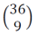
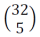

Infos zur Berechnung der W'keiten beim Jassen
Es gibt 4 Farben zu je 9 Karten: Herz, Karo, Kreuz und Pik.
Jede Farbe besitzt die Karten As, König, Dame, Bauer, 10, 9, 8, 7 und 6.
Ein Dreiblatt besteht aus drei Karten derselben Farbe mit aufeinanderfolgenden Reihenfolge, z.B.
Herz König, Herz Dame und Herz Bauer.
Für ein Vierblatt gilt dies sinngemäss, also z.B. Pik 10, Pik9, Pik 8 und Pik 7.
Vier gleiche (z.B. 4 Herz, 4 Könige usw.) haben zwar alle die gleiche Wahrscheinlichkeit, werden
aber beim Weisen verschieden belohnt:
Für 4 Neuner gibt es je nach Abmachung 0 Punkte oder 150 Punkte.
Für 4 Bauern gibt es 200 Punkte
Für vier gleiche 10-er, bzw. Damen, Könige und Asse gibt es 100 Punkte.
Die theoretischen Wahrscheinlichkeiten sind:
für genau ein Dreiblatt (Weis von 20): 21.5%
für zwei Dreiblätter: 0.94%
für ein Vierblatt (Weis von 50): 3.8%
für vier gleiche (4 Asse oder 4 Könige .. bis 4 9-er ): 6*0.214% ≈ 1.28%
für ein Fünfblatt (Weis von 100): 0.536%
für ein Sechsblatt (Weis von 100): 0.06%
Zur Berechnung der Wahrscheinlichkeit von z.B. 4 Assen für einen Spieler:
Ein Spieler erhält zufällig 9 der 36 Karten. Es gibt also
 = 94'143'280 mögliche Fälle. Günstig davon sind
 = 201'376. Dies ergibt eine Wahrscheinlichkeit von
0.214%.
Zur Simulation Wahrscheinlichkeit von Dreiblatt, Vierblatt usw. beim Jassen